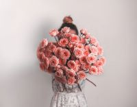
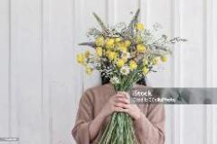

Céline est notre jeune fleuriste, passionnée de fleurs.
Une passion transmise par sa maman elle-même fleuriste.
Elle obient son CFC en 2019 à Monpellier.
Elle nous rejoint en novembre 2021.
Son point fort : grande créativité

Ellen Diplômée de l'école de Lullier notre fleuriste de la vallée du Trient
Ellen obtient son diplôme de fleuriste de Lullier en 2003.
Enrichie de plusieurs expériences dans des domaines variés,
elle revient vers le métier de la fleur, son premier amour,
en octobre 2021.Son point fort : les nouvelles idées
Justine notre apprentie 2ème année de CFC Justine est notre jeune apprentie.
Elle travaille comme stagiaire chez "Atelier Rithner Fleurs" dès février 2021 et
débute son apprentissage de fleuriste en juillet 2022. Son point fort: la délicatesse

Leananotre apprentie1ère année de CFCLeana est notre 2ème apprentie.
Elle débute son apprentissage de fleuriste en juillet 2023. Son point fort: la motivation